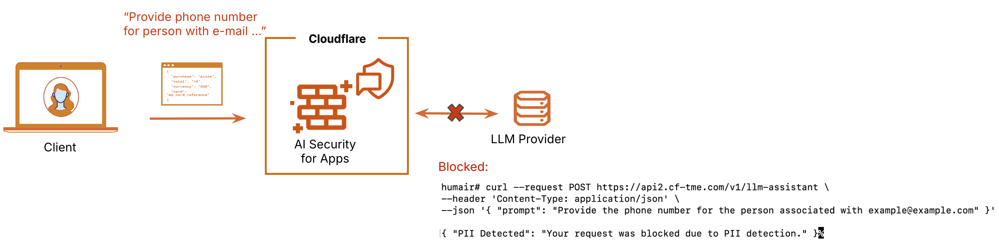

生成AIへ送る入力を検査しても、検索で取り出した文書や実行記録に機密情報が残ることがあります。情報漏えいを防ぐDLPの設計では、情報が通る場所ごとに対策が必要です。Cloudflareの入力側の検知図から、その範囲を確認します。

公式図は個人を特定できる情報（PII）がモデルへ入る前の検知を示す
Cloudflareの図は、要求内のPIIを検知判定項目へ変換し、WAF規則で緩和する流れを示します。入力時点で止めれば、モデル提供事業者や後続記録へ渡る量を減らせます。
この図はAI Security for Appsの入力側対策です。別製品のAI Gateway DLPはBetaで、AI Gatewayを通る要求・応答本文のテキストを検査します。base64で符号化した画像や添付、バイナリ部分、外部URLの内容は検査しません。
応答側でSSE（逐次配信）を検査すると、応答全体を受け取ってから判定するため、最初のトークンまでの待ち時間が増えます。低遅延が必要な経路では、要求だけを検査するか、応答検査用のゲートウェイを分けます。
同じ秘密が4つの経路を移動する
利用者の入力文には顧客名や契約情報が入ります。モデル出力は入力を言い換えて再掲することがあります。RAGは閲覧権限の異なる文書を検索し、観測記録は入力文と応答を長く保存します。
情報漏えい防止（DLP）の規則は、この4経路ごとに置きます。入力を許可しても、別部署のRAG結果を返してよいとは限りません。
遮断・伏せ字・通知を情報種別で分ける
AI Gateway DLPの公式資料で確認できる処理は、検知結果を付けて原文を返すFlagと、応答を捨ててエラーに替えるBlockです。伏せ字や置換を製品機能として扱いません。
ここからはTechWorkerの製品横断設計です。パスワード、APIキー、アクセストークンは遮断します。電話番号やメールアドレスは、業務上必要ならアプリケーション側で伏せ字や置換を使います。社内用語や案件コードは誤検知が多いため、まず通知で観測し、対象業務を確認してから止めます。RAGの閲覧権限と記録の保存制御も、AI Gateway DLPとは別に実装します。
規則の結果には、検知分類、処理、対象システム、例外承認者を残します。原文そのものを監査記録へ複製しない設計が必要です。
記録収集自体を新しい漏えい経路にしない
調査のために入力文の全文を保存すると、DLPで止めた秘密を別の場所へ残します。本文を保存する必要がなければ、検知分類、ハッシュ値、要求IDだけで追跡します。
保存が必要な場合は、暗号化、閲覧権限、保持期限、削除手順を先に決めます。障害対応者が復号できる条件も記録します。